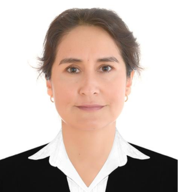
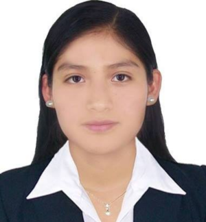
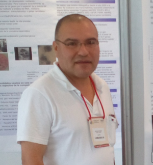
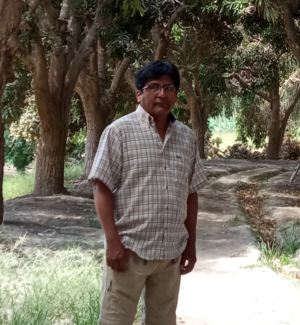
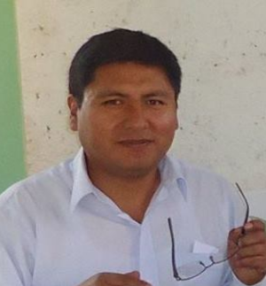
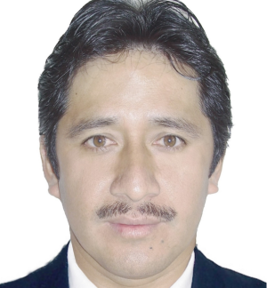

En este espacio encontrarás a los docentes investigadores reconocidos por su aporte al desarrollo académico y científico. Conoce a quienes, desde su especialidad, contribuyen al progreso de nuestra región y del país.
Filtros
Carreras UNAMBA





